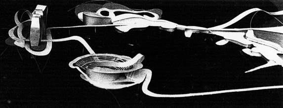

Yael Reisner Studio
Architecture & Design
'Extending the Tel Aviv Promenade into the Sea', Exhibition, 1991
Friday, 25 January 1991
A one woman show at the Ami Steinitz Contemporary Art Gallery, Tel Aviv
The following image was added in 2004 as part of the Israeli Pavilion for the 9th Biannale of Architecture in Venice
The Pavilion's theme "Back to the Sea" looked at significant projects developed for the Tel Aviv-Jaffa coastline
